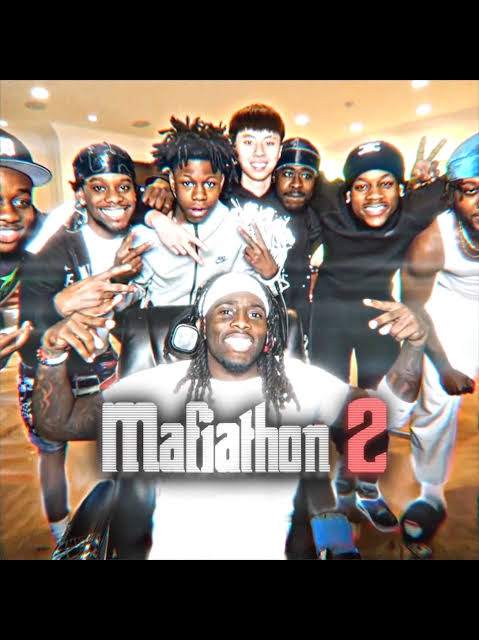

What Is Mafiathon?
Mafiathon is the name Kai has used for major livestreaming events. These events bring viewers together for extended streams, special guests, and memorable moments.

A page about Kai Cenat's streams, content, and career.
Kai Cenat is a popular American livestreamer and online content creator known for his energetic personality, entertaining reactions, and collaborations with other creators.
Kai creates different types of content for viewers to enjoy.
Mafiathon is the name Kai has used for major livestreaming events. These events bring viewers together for extended streams, special guests, and memorable moments.

Viewers may enjoy Kai's humor, high-energy reactions, interactions with friends, and ability to make livestreams entertaining.
Kai has built a large online audience through livestreaming, videos, collaborations, and his work with AMP.